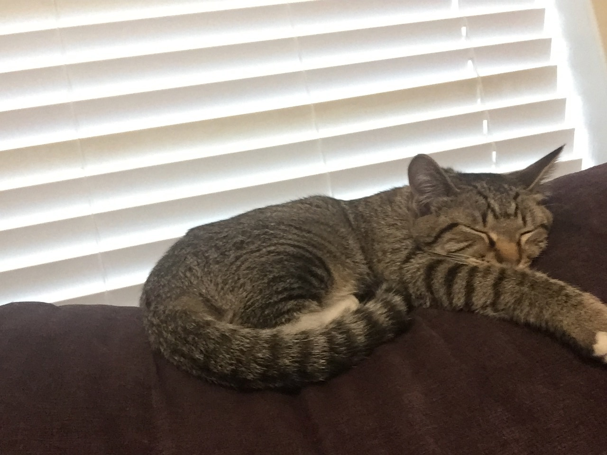
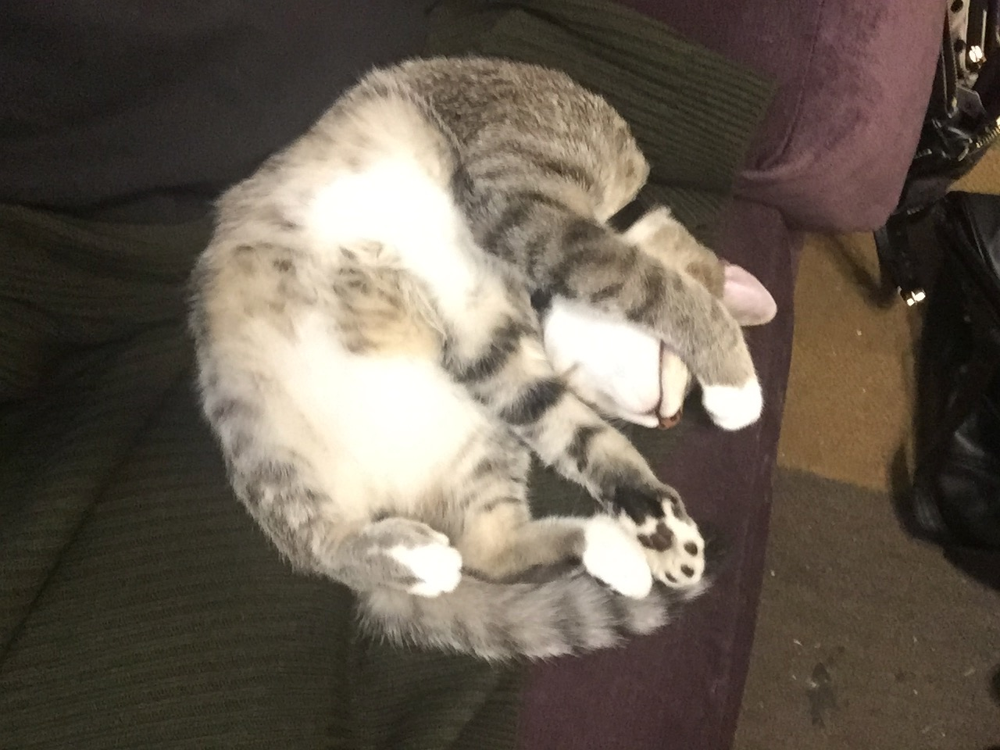
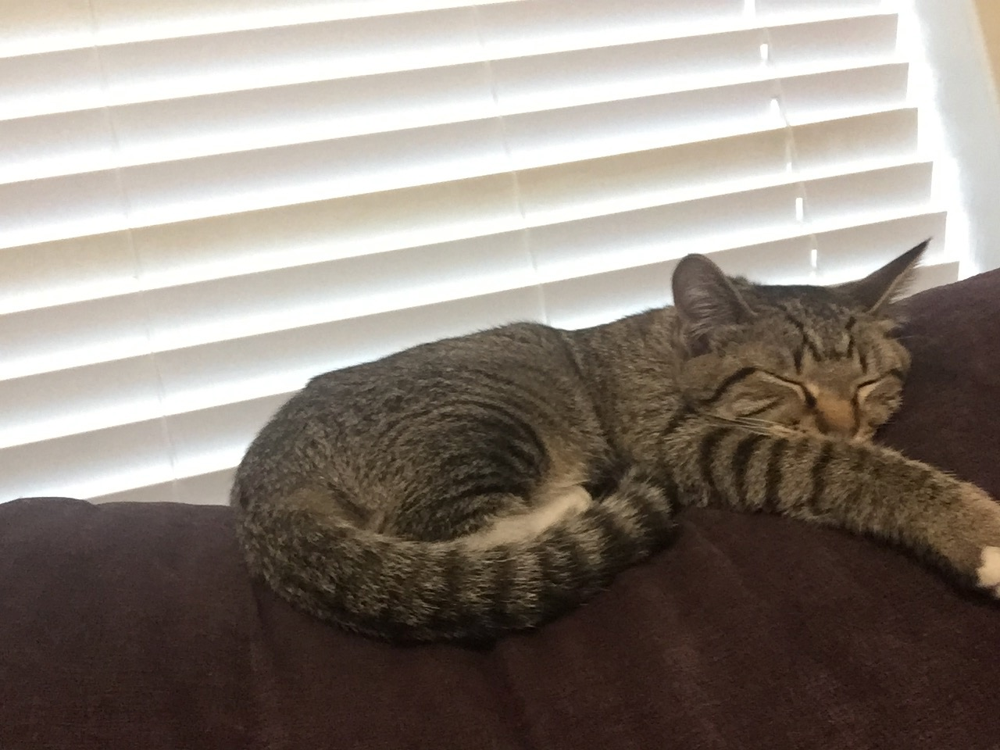
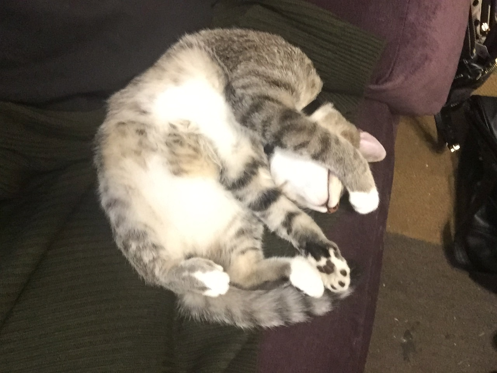
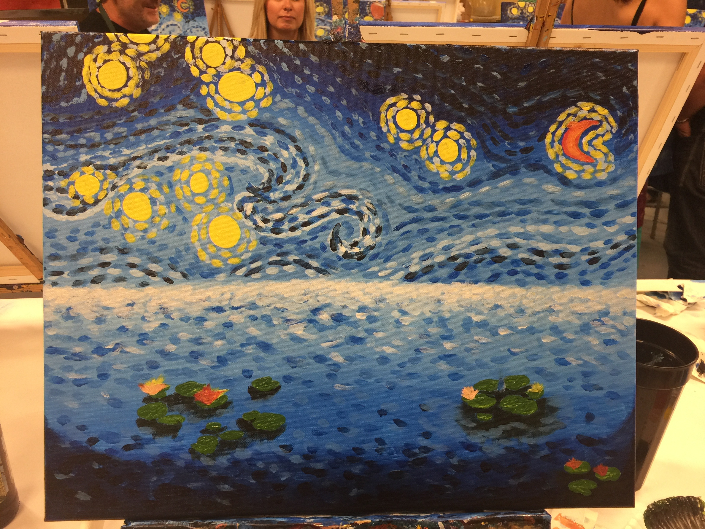
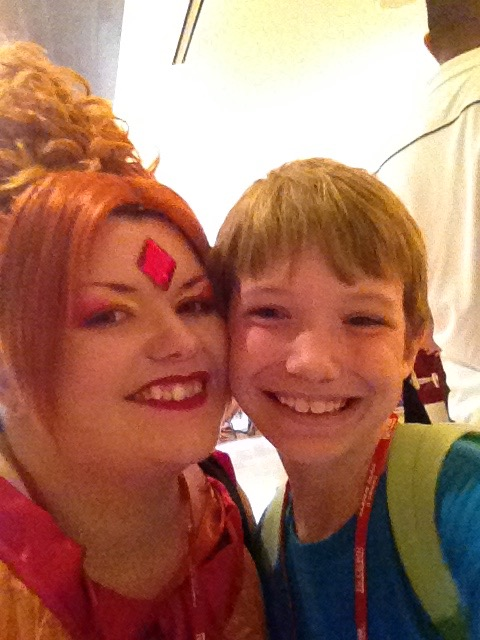
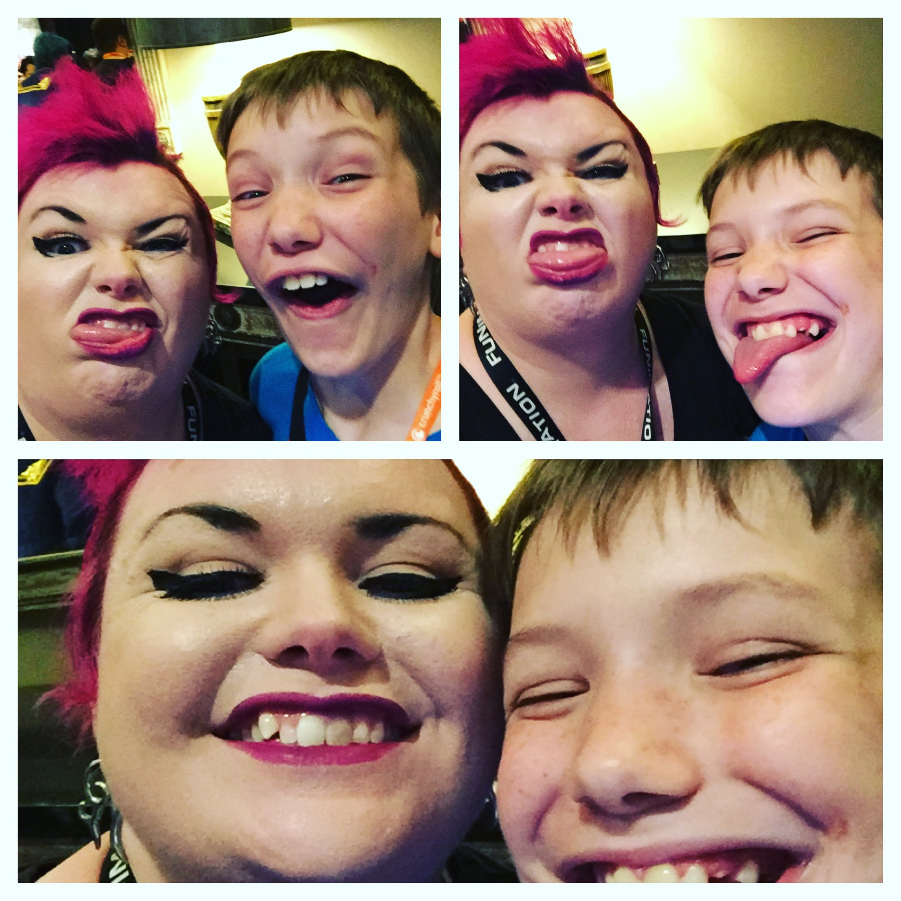
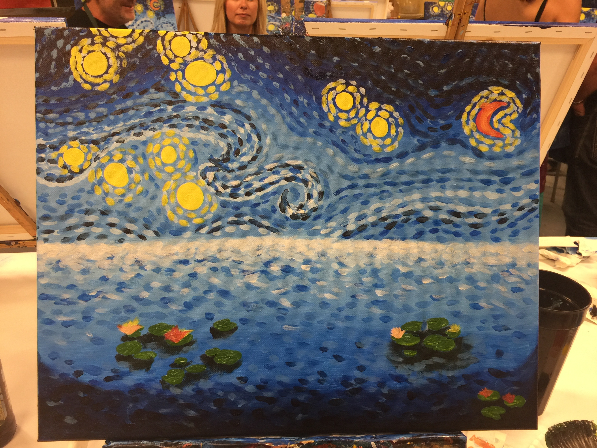
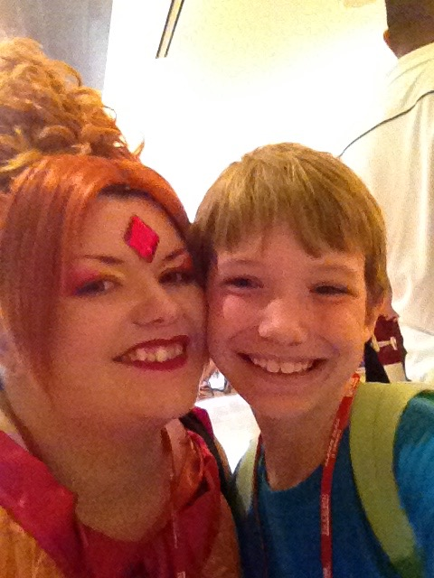
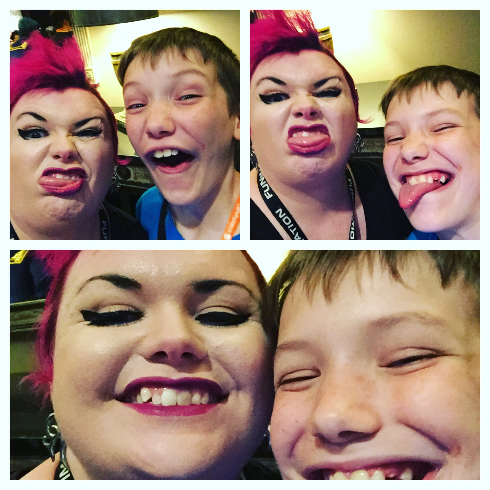

Of course the first things shared when you see a title "All About Me" is the name, age,
hobbies, etc...so let's get those out of the way.
My name is Melissa Pringle, I'm currently
33 years old, I have a husband whom I've been with for nearly 10 years and a 12 year old son.
I've never had a clear path in my life to say "I was destined to do this". I fell ito my
previous career being a cosmetologist at 19.
It did me well and I got to meet all sorts of
people; some I'll never forget and some I wish I could. After 8 years I wanted something
more
and decided to become and instructor and teach cosmetology and nail technology.
Now let's
move on below...
This word doesn't mean the same it did years ago, when I was little, as I am sure every
generation can say the same. Today, family can whatever you desire to call it, mine is small
but irreplacable.
I had my son at 21, and he has been the greatest thing to happen to me
ever. If it hadn't been for him, I don't want to think of the places I could be. And then
the same could be said for my husband as well. We met when my boy was nearly 3 and became the
biggest blessing to the two of us. We are a blended family of a blended family. His niece is
adopted, and both parents remarried. I'm the eldest of two but, losing my sister when I was 10,
has made me an only child for over 20 years. Of course we both have extended blood family but
nothing we're close to. Family for us is the best friend of over 15 years you've held onto since
middle school and have on the emergency list for you kid's school contact list before your
sister or parents. For us, family is my ex'fiance's aunt that calls just to check on my son,
Xander, to see if he'd like to go to some festival or see the new cats she's fostering.
Like I said, the word means something different to everyone, for us it isn't blood. It's
who is there for me when I need them because I know I am when they need it and when they don't
Not that as a wife, mother and now full-time student in
a different city allows for a lot of spare time, but when I squeeze it in, this
is what I do with it.
I make things for myself and others, be it cosplay outfits and props for conventions,
baking just about anything sweet for whatever reason, sew, knit, crochet, cross-stitch,
drawing, sketching, painting, carving, sculpting...you name it, if it involves some type of craft/art,
I've probably at least tried it.
I've been drawing since I can remember but really came into my own
in high school when gel pens were a thing. I drew a lot of Lady Death and other comics until I discovered anime.
Now I can sketch out just about anything I put my mind to. I've had to learn several techniques with all the
different types of art to adapt to my medium. For example anime cell work is done from the foreground,
such as highlights and detail, to the background, like the skin and sky, so that they're the smoothest
and "underneath" everything else. Where for nail art and canvas You start with the background and work your
way forward. It keeps me on my toes! Of course my son is taking after me but also going a fully different route
than mine, he's more focused on gaming and anime than me, though I think he's leagues better than me too.
This can be a rather vague subject so I'm going to try to keep it as simple as possible.
I'm only going to focus on professional experience and not every little thing I could give an opinion on.
First I started working right before my 16th birthday and haven't stopped since. Most of my first jobs were
cashiering of some type but I enjoyed. You get to meet all kinds of people but for short amounts of time, so
it kept things moving and interesting. After high school and unsure of what I wanted to do, I took a stab in
the dark at cosmetology school and that stuck with me. It would take me for an interesting ride for nearly
15 years of my life. It's not easy but nothing worth while is. A few years in I found my niche working in a
men's salon and had already had my son by that time. But I wanted something more from it, not just client after
client. That's when I went back to school and became an instructor to teach cosmetology. It was one of the most
rewarding things I'd done. I was impacting lives and starting young, eager minds on a new life path. I taught just
cosmetology for a few years and then taught strictly nail technology for 2 more. When I was no longer physically
capable to perform my duties I knew I needed to move on.
Tehcnology is something I grew up with and has long been
a part of my life with a technical engineer for a father. So, digging way back into my childhood, my husband and I
thought for me to take a leap of faith and go back to school, which is where I am now. Learning web development, so
that I can have a career that is just as intriguing and mind bending as my previous paths even if the terain is different.


 





 




